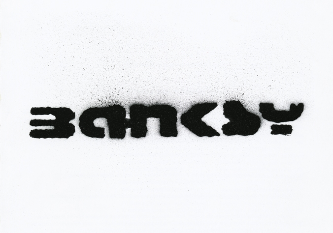
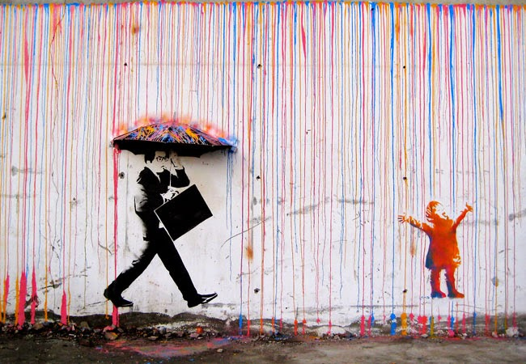

Banksy (Ukjent navn født 1974) er en kjent engelsk writer av graffiti som opererer under pseudonym.
Det er antatt at Banksy bor i Yate, i nærheten av Bristol. Hans piece eller kunstverk er ofte satiriske kunstverk som omhandler emner fra politikk, kultur, og etikk.
Vanligvis er budskapet anti-militært, anti-kapitalistisk og/eller kritisk til den etablerte samfunnsstrukturen. Hans gatekunst (street art),
som kombinerer graffiti med distinktstensilteknikk, har dukket opp i London og andre byer verden rundt.
Banksy viser sin kunst på offentlig synlige flater som vegger og selvbygde fysisk prop stykker. Banksy selge fotografier eller reproduksjoner av hans street
graffiti, men kunstauksjon har vært kjent for å forsøke å selge sin street art på stedet og la problemet med fjerning i hendene på den vinnende budgiver.
Banksy første film, Exit Through the Gift Shop, omtalt som "verdens første street art katastrofe film", gjorde sin debut på 2010 Sundance Film Festival.
Filmen ble utgitt i Storbritannia 5. mars 2010. I januar 2011 ble han nominert til Oscar for beste dokumentar for filmen. I 2014 ble han tildelt Person
of the Year i 2014 Webby Awards.

